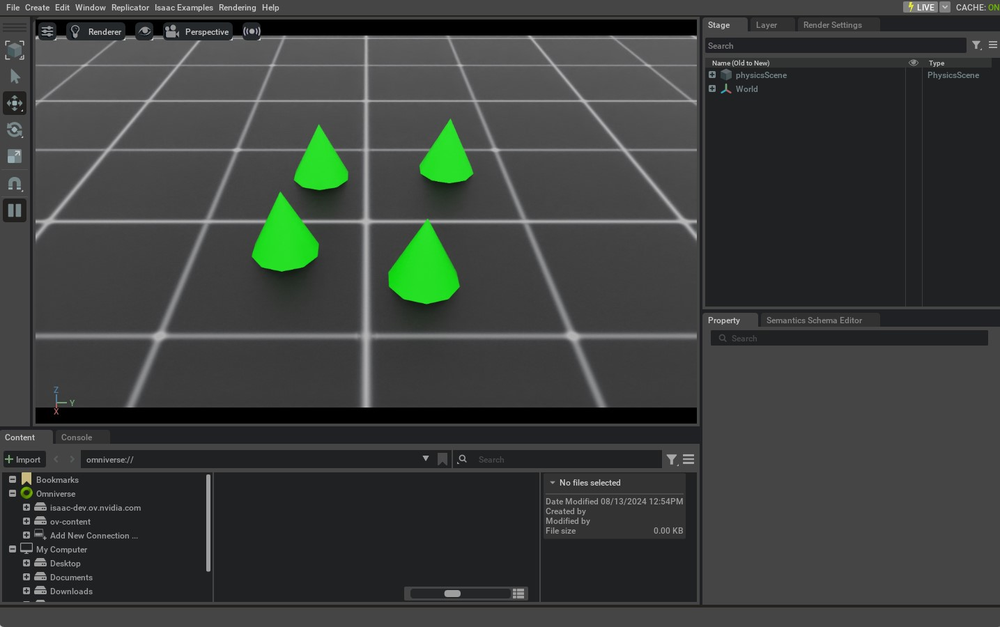

前面的教程介绍了 Standalone Script 的基本结构，以及如何在仿真中生成 Object（或 Prim）。本教程将使用 Isaac Lab 的 assets.RigidObject Class，创建 Rigid Object 并与之交互。
1 代码
本教程对应 run_rigid_object.py，位于 scripts/tutorials/01_assets 目录。
代码 run_rigid_object.py
# Copyright (c) 2022-2026, The Isaac Lab Project Developers (https://github.com/isaac-sim/IsaacLab/blob/main/CONTRIBUTORS.md).
# All rights reserved.
#
# SPDX-License-Identifier: BSD-3-Clause
"""
This script demonstrates how to create a rigid object and interact with it.
.. code-block:: bash
# Usage
./isaaclab.sh -p scripts/tutorials/01_assets/run_rigid_object.py
"""
"""Launch Isaac Sim Simulator first."""
import argparse
from isaaclab.app import AppLauncher
# add argparse arguments
parser = argparse.ArgumentParser(description="Tutorial on spawning and interacting with a rigid object.")
# append AppLauncher cli args
AppLauncher.add_app_launcher_args(parser)
# parse the arguments
args_cli = parser.parse_args()
# launch omniverse app
app_launcher = AppLauncher(args_cli)
simulation_app = app_launcher.app
"""Rest everything follows."""
import torch
import isaaclab.sim as sim_utils
import isaaclab.utils.math as math_utils
from isaaclab.assets import RigidObject, RigidObjectCfg
from isaaclab.sim import SimulationContext
def design_scene():
"""Designs the scene."""
# Ground-plane
cfg = sim_utils.GroundPlaneCfg()
cfg.func("/World/defaultGroundPlane", cfg)
# Lights
cfg = sim_utils.DomeLightCfg(intensity=2000.0, color=(0.8, 0.8, 0.8))
cfg.func("/World/Light", cfg)
# Create separate groups called "Origin1", "Origin2", "Origin3"
# Each group will have a robot in it
origins = [[0.25, 0.25, 0.0], [-0.25, 0.25, 0.0], [0.25, -0.25, 0.0], [-0.25, -0.25, 0.0]]
for i, origin in enumerate(origins):
sim_utils.create_prim(f"/World/Origin{i}", "Xform", translation=origin)
# Rigid Object
cone_cfg = RigidObjectCfg(
prim_path="/World/Origin.*/Cone",
spawn=sim_utils.ConeCfg(
radius=0.1,
height=0.2,
rigid_props=sim_utils.RigidBodyPropertiesCfg(),
mass_props=sim_utils.MassPropertiesCfg(mass=1.0),
collision_props=sim_utils.CollisionPropertiesCfg(),
visual_material=sim_utils.PreviewSurfaceCfg(diffuse_color=(0.0, 1.0, 0.0), metallic=0.2),
),
init_state=RigidObjectCfg.InitialStateCfg(),
)
cone_object = RigidObject(cfg=cone_cfg)
# return the scene information
scene_entities = {"cone": cone_object}
return scene_entities, origins
def run_simulator(sim: sim_utils.SimulationContext, entities: dict[str, RigidObject], origins: torch.Tensor):
"""Runs the simulation loop."""
# Extract scene entities
# note: we only do this here for readability. In general, it is better to access the entities directly from
# the dictionary. This dictionary is replaced by the InteractiveScene class in the next tutorial.
cone_object = entities["cone"]
# Define simulation stepping
sim_dt = sim.get_physics_dt()
sim_time = 0.0
count = 0
# Simulate physics
while simulation_app.is_running():
# reset
if count % 250 == 0:
# reset counters
sim_time = 0.0
count = 0
# reset root state
root_state = cone_object.data.default_root_state.clone()
# sample a random position on a cylinder around the origins
root_state[:, :3] += origins
root_state[:, :3] += math_utils.sample_cylinder(
radius=0.1, h_range=(0.25, 0.5), size=cone_object.num_instances, device=cone_object.device
)
# write root state to simulation
cone_object.write_root_pose_to_sim(root_state[:, :7])
cone_object.write_root_velocity_to_sim(root_state[:, 7:])
# reset buffers
cone_object.reset()
print("----------------------------------------")
print("[INFO]: Resetting object state...")
# apply sim data
cone_object.write_data_to_sim()
# perform step
sim.step()
# update sim-time
sim_time += sim_dt
count += 1
# update buffers
cone_object.update(sim_dt)
# print the root position
if count % 50 == 0:
print(f"Root position (in world): {cone_object.data.root_pos_w}")
def main():
"""Main function."""
# Load kit helper
sim_cfg = sim_utils.SimulationCfg(device=args_cli.device)
sim = SimulationContext(sim_cfg)
# Set main camera
sim.set_camera_view(eye=[1.5, 0.0, 1.0], target=[0.0, 0.0, 0.0])
# Design scene
scene_entities, scene_origins = design_scene()
scene_origins = torch.tensor(scene_origins, device=sim.device)
# Play the simulator
sim.reset()
# Now we are ready!
print("[INFO]: Setup complete...")
# Run the simulator
run_simulator(sim, scene_entities, scene_origins)
if __name__ == "__main__":
# run the main function
main()
# close sim app
simulation_app.close()
2 代码解析
该 Script 将 main() 拆分为两个函数，对应 Simulator 设置流程中的两个主要步骤：设计 Scene，以及运行 Simulation Loop。
设计 Scene：顾名思义，这部分负责将所有的Prims添加到Scene中。
运行Simulation：这部分负责步进Simulator，与Prims交互 在 Scene 中，例如，更改其 Poses，并对它们应用任何 Commands。
之所以分为两个步骤，是因为必须先完成 Scene 设计，再对 Simulator 执行 Reset。Reset 会自动开始 Simulation；此后不应再向 Scene 添加启用物理的新 Prim，否则可能出现意外行为，但仍可通过已有的 Physics Handle 与 Prim 交互。
2.1 设计 Scene
与前面的教程一样，首先向 Scene 添加 Ground Plane 和 Light，再通过 assets.RigidObject 创建 Rigid Object。该 Class 会在指定路径生成 Prim，并初始化对应的 Rigid Body Physics Handle。
本例沿用生成 Prim 教程中的圆锥体配置，但将 Spawn Configuration 包装在 assets.RigidObjectCfg 中。该配置描述 Asset 的生成方式、默认初始状态及其他元数据；传给 assets.RigidObject 后，会在 Simulation 开始时生成 Object 并初始化 Physics Handle。
为演示一次生成多个 Rigid Object，代码先创建 /World/Origin{i} 形式的父 Xform Prim。向 assets.RigidObject 传入正则路径 /World/Origin.*/Cone 后，每个匹配的 Origin 下都会生成一个 Rigid Object Prim。例如，若 Scene 中存在 /World/Origin1 和 /World/Origin2，则会分别生成 /World/Origin1/Cone 和 /World/Origin2/Cone。
# Create separate groups called "Origin1", "Origin2", "Origin3"
# Each group will have a robot in it
origins = [[0.25, 0.25, 0.0], [-0.25, 0.25, 0.0], [0.25, -0.25, 0.0], [-0.25, -0.25, 0.0]]
for i, origin in enumerate(origins):
sim_utils.create_prim(f"/World/Origin{i}", "Xform", translation=origin)
# Rigid Object
cone_cfg = RigidObjectCfg(
prim_path="/World/Origin.*/Cone",
spawn=sim_utils.ConeCfg(
radius=0.1,
height=0.2,
rigid_props=sim_utils.RigidBodyPropertiesCfg(),
mass_props=sim_utils.MassPropertiesCfg(mass=1.0),
collision_props=sim_utils.CollisionPropertiesCfg(),
visual_material=sim_utils.PreviewSurfaceCfg(diffuse_color=(0.0, 1.0, 0.0), metallic=0.2),
),
init_state=RigidObjectCfg.InitialStateCfg(),
)
cone_object = RigidObject(cfg=cone_cfg)
由于后续 Simulation Loop 需要与该 Rigid Object 交互，Scene 创建函数会返回对应实体。后续教程将介绍如何用 scene.InteractiveScene 更方便地管理多个 Scene 实体。
# return the scene information
scene_entities = {"cone": cone_object}
return scene_entities, origins
2.2 运行 Simulation Loop
Simulation Loop 包含三个步骤：按固定间隔重置 Simulation 状态、推进 Simulation，以及更新 Rigid Object 的内部 Buffer。为便于阅读，代码先从 Scene 实体字典中取出 Rigid Object 并保存到变量中。
2.2.1 重置 Simulation 状态
重置 Rigid Object Prim 时，需要同时设置 Pose 和 Velocity，两者共同构成根状态。该状态使用 Simulation World Frame，而不是父 Xform Prim 的局部坐标系，因为 Physics Engine 只识别 World Frame。因此，写入状态前必须先把目标状态转换到 World Frame。
assets.RigidObject.data.default_root_state 提供默认根状态，其值可通过 assets.RigidObjectCfg.init_state 配置。本例在默认状态基础上随机修改平移，再调用 assets.RigidObject.write_root_pose_to_sim() 和 assets.RigidObject.write_root_velocity_to_sim()，将目标状态写入 Simulation Buffer。
# reset root state
root_state = cone_object.data.default_root_state.clone()
# sample a random position on a cylinder around the origins
root_state[:, :3] += origins
root_state[:, :3] += math_utils.sample_cylinder(
radius=0.1, h_range=(0.25, 0.5), size=cone_object.num_instances, device=cone_object.device
)
# write root state to simulation
cone_object.write_root_pose_to_sim(root_state[:, :7])
cone_object.write_root_velocity_to_sim(root_state[:, 7:])
# reset buffers
cone_object.reset()
2.2.2 步进 Simulation
推进 Simulation 前，先调用 assets.RigidObject.write_data_to_sim() 将外力等待处理数据写入 Simulation Buffer。本教程没有施加外力，因此该调用并非必需，但为了展示完整流程仍予以保留。
# apply sim data
cone_object.write_data_to_sim()
2.2.3 更新状态
每次推进 Simulation 后，调用 assets.RigidObject.update() 更新 Rigid Object 的内部 Buffer，使 assets.RigidObject.data 反映最新状态。
# update buffers
cone_object.update(sim_dt)
3 代码执行
代码完成后，执行以下 Command 查看结果：
./isaaclab.sh -p scripts/tutorials/01_assets/run_rigid_object.py
窗口中会显示 Ground Plane、Light 和多个绿色圆锥体。圆锥体从随机高度落下，并与地面发生 Collision。关闭窗口、单击 UI 中的 Stop 按钮，或在 Terminal 中按 Ctrl+C，均可停止 Simulation。该按钮在 UI 中标为 STOP。

本教程演示了如何生成 Rigid Object，用 RigidObject Class 初始化其 Physics Handle，并读写 Object 状态。下一教程将介绍 Articulation，即由关节连接的多个 Rigid Object。